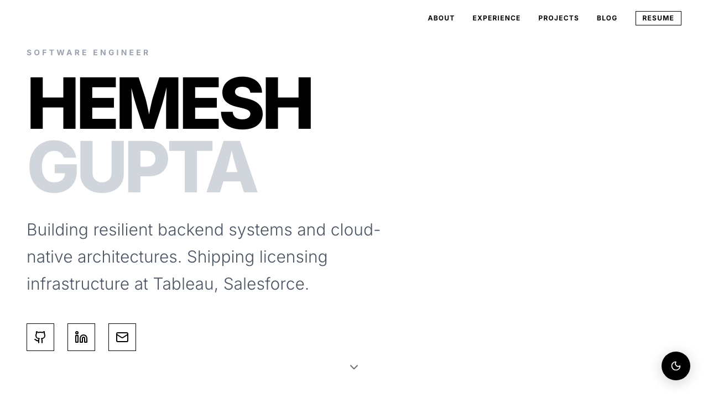

Salesforce
Software Engineer II
Feb 2026 - Present
Software Engineer I
July 2024 - Jan 2026
Started with Tableau Cloud Manager's User Service, building user lifecycle APIs, saga-based sync to Tableau Pods, bulk operations via Step Functions, and license consumption tracking on multi-region DynamoDB. Then moved to Tableau's Licensing team, working across different licensing services to ship activation, lease management, and freemium licensing.
Porter
Software Development Intern
Jan 2024 - June 2024
Part of the Customer Growth & Engagement team. Built backend services powering cashback, referrals, and transactional flows that scaled to production traffic. Ktor, Dagger, clean APIs, and zero P0s across the internship.
Salesforce
Software Development Intern
Jan 2024 - June 2024
Built a config drift detection pipeline for Tableau Cloud pods, pulling configs from GitLab repos and S3, diffing against the golden baseline, auto-filing GUS defects, and alerting teams on Slack. Fully automated, zero manual toil.
Samsung
Software Development Intern
May 2022 - Jul 2022
Automated a full regression suite using Selenium and Pytest, replacing hours of manual QA effort per cycle. Cut regression turnaround significantly and freed the team to focus on shipping instead of re-testing.
Education
BITS Pilani
B.E. Computer Science, Pilani Campus
Nov 2020 - Jul 2024
Graduated from the Pilani campus with a strong foundation in software development, problem-solving, and innovation — applied through coursework, side projects, and a from-scratch ERPLAG compiler.
Grade: 8.5 / 10
Projects

A Google Docs-style editor with real-time multi-user collaboration using Socket.io and operational transforms to handle concurrent edits without conflicts.

Complete compiler for ERPLAG in C: lexer, parser, semantic analyzer, and code generator. Written from scratch with no libraries, just pointer arithmetic and pain.

A URL shortener service built with Spring Boot. Clean REST API, redirect tracking, and enough Spring annotations to make an enterprise architect proud.

Converts any image into ASCII art. Supports a CLI tool and a Django REST API so you can make your photos look like a 1980s terminal. Deployed with proper WSGI and everything.

RESTful product catalog and shopping cart API with CRUD, image uploads, and keyword search. Uses an in-memory database that forgets everything on restart, just like me after meetings.

A Java network tool for capturing and inspecting live traffic, with port scanning and basic traffic analysis. Written when I wanted to understand what was actually happening on the wire.

My original portfolio, built with React, Tailwind CSS, and Framer Motion. Dark mode, smooth animations, and engineering writing.
Get in Touch
Whether you want to discuss a project or just say hi, my inbox is always open.
- hgpt185@gmail.com
- hemeshgupta
- Location
- Bengaluru, India